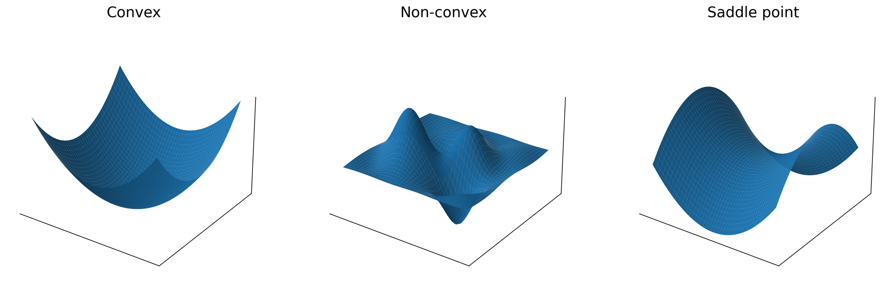

2 · Loss Landscape
Loss landscapes are not simple bowls

Convex
One clean basin, one global minimum. Easier theory, easier guarantees. Rare in deep learning.
Non-convex
Neural networks create complicated surfaces with many valleys, flat regions, and ridges.
Saddle points
Gradient is near zero, but the point is not a minimum. More common than local minima in high dimensions.
We usually are not searching for the exact global minimum — we want a good basin that trains well and generalizes well.